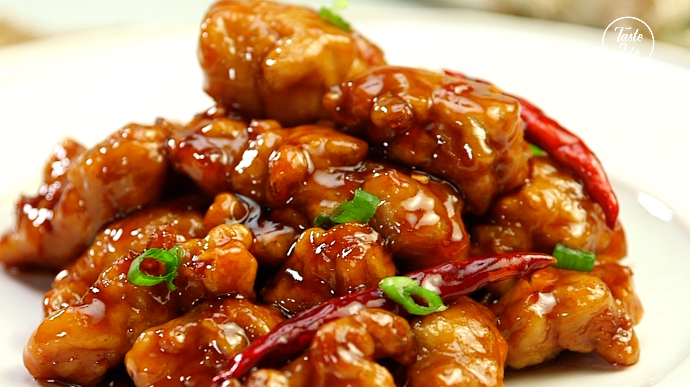

General Tso's Chicken

Description
General Tso's Chicken is a Chinese-American dish of fried chicken pieces that are breaded and tossed in a tangy sauce.
Ingredients
Chicken
- 2 lb chicken thighs, trimmed and cut into 1-inch pieces
- 1/2 cup corn starch
- 1/4 cup extra light olive oil, for frying, plus more as needed
- 2 tbsp minced ginger, from a 2-inch piece of ginger
- 3 cloves garlic, or 1 Tbsp grated or finely minced
- 1/2 tsp red pepper flakes, or added to taste
- 1 tsp sesame seeds, optional for garnish
General Tso's Sauce
- 1/2 cup cold water
- 5 tbsp low sodium soy sauce
- 3 tbsp rice vinegar, or more to taste
- 1 1/2 tbsp hoisin sauce
- 4 tbsp granulated sugar
- 1 1/2 tbsp cornstarch
Steps
- Cut chicken into 1-inch cubes. Toss chicken in batches with cornstarch, tapping off the excess. Set dredged chicken on a platter and set aside.
- In a separate dish, combine all the ingredients for your sauce and whisk to combine.
- Preheat a non-stick skillet with oil. Cook chicken in 2 to 3 batches, sauteeing until golden on both sides and cooked through then remove the chicken from the pan and transfer to a bowl. Repeat with the remaining chicken, adding more oil as needed. Leave at least 1 Tbsp oil in the pan.
- Add the garlic, ginger and pepper flakes. Sautee for about 30 seconds or until fragrant.
- Add the sauce to the skillet and bring it to a simmer while stirring. Let it simmer for 1 minute to cook off the vinegar a little. Taste the sauce and add more soy sauce or rice vinegar to taste if desired. Add the chicken and toss to coat. Serve garnished with sesame seeds if desired.